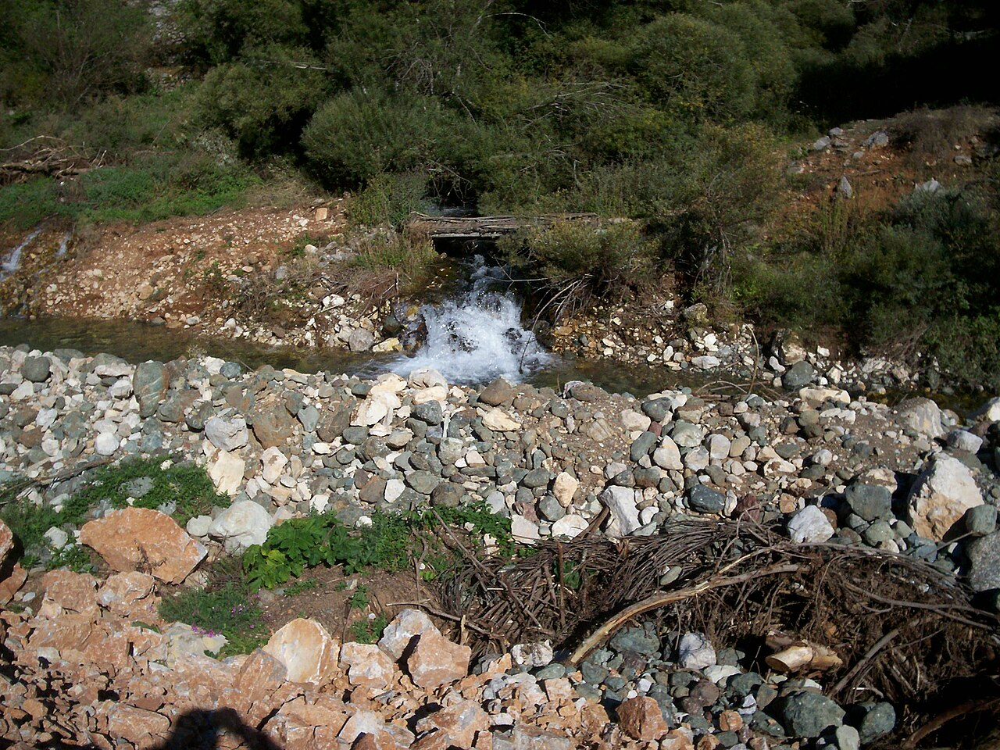
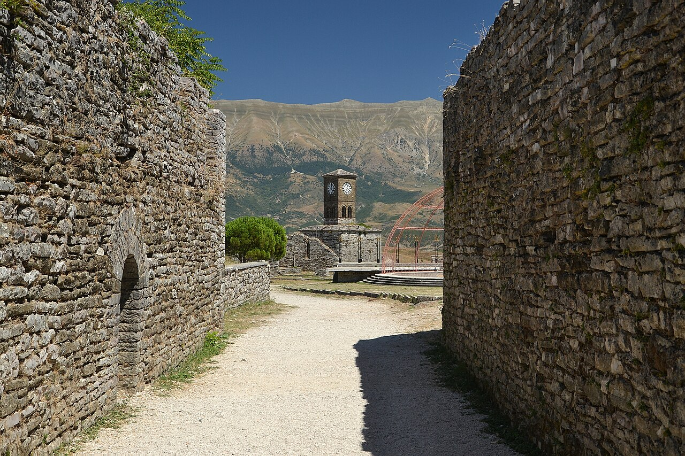

Maršrutas žemėlapyje
Svarbu žinoti prieš kelią
- Osumo kanjonas → Bogovė: nesukite į tiesų kelią per patį kanjoną – tai žvyrkelis su akmenimis, netinkamas nuomojamam automobiliui, net jei navigacija siūlo jį kaip trumpiausią. Grįžkite tuo pačiu asfaltuotu keliu iki Berat–Čorovodė trasos (SH72) ir ja važiuokite į Bogovę.
- Bogovės kaimelis: stovi prie asfaltuoto kelio, bet paskutiniai keli šimtai metrų į kaimo gilumą gali būti neasfaltuoti. Sausu oru pravažiuojama ramiai, po smarkaus lietaus geriau automobilį palikti prie pagrindinio kelio ir likusią dalį nueiti pėsčiomis.
- Beratas → Gjirokastra: kelias veda per kalnus (Tepelenę, Këlcyrę) – realus važiavimo laikas apie 3 val. 30 min., gerokai daugiau, nei atrodo pagal atstumą žemėlapyje.
- Paskutinę dieną automobilio grąžinimui ir registracijai TIA oro uoste liks daugiau nei 3 valandos iki skrydžio – skubėti nereikės.
1 diena · spalio 30, penktadienis
Atvykimas į Tiraną
Atvykimas ir nakvynė prie oro uosto
Atskridus, pirmiausia atsiimkite bagažą ir nuomos automobilį. Kadangi atvykstama vėlai vakare, iš karto važiuokite į nakvynės vietą netoli oro uosto.

Viešbutis prie oro uosto (Nikël)
Nakvynė visai netoli oro uosto – patogu po vėlyvo skrydžio, nereikia ilgai važiuoti pirmą vakarą. Iš vakaro pasitikslinkite su viešbučiu vėlyvo įsiregistravimo laiką. Išvykimas kitą rytą apie 09:00.
2 diena · spalio 31, šeštadienis
Tirana → Beratas ir Osumo kanjonas
Beratas, Osumo kanjonas, Bogovė
Berato pilis ir senamiestis (pirmas žvilgsnis)
Trumpas stabtelėjimas pažvelgti į UNESCO senamiestį ir pilį iš apačios – pilnas apsilankymas laukia vakare, grįžus iš kanjono.

Osumo kanjono apžvalgos aikštelė
Įspūdingas kanjono vaizdas. Automobilį palikite aikštelėje viršuje – toliau žemyn eina tik pėsčiųjų takas, avėkite patogią avalynę, gali būti šlapia.

Pietų pertrauka mažame kalnų kaimelyje netoli kanjono – rami vietinė virtuvė, gražūs kaimo ir kalnų vaizdai aplinkui.

Beratas – senamiestis ir pilis (nakvynė)
Vakare pasivaikščiokite po Mangalemo ir Goricos kvartalus, užlipkite iki pilies – saulei leidžiantis apie 16:30–17:00 vaizdas nuo Goricos tilto ypač gražus. Automobilį geriausia palikti apačioje, senamiesčio gatvelės siauros. Kitą rytą išvažiuokite anksti, apie 08:15.

3 diena · lapkričio 1, sekmadienis
Beratas → Gjirokastra
Gjirokastros bazaras ir pilis
Gjirokastros senasis bazaras – pietūs (Kujtimi)
Laisvo laiko pasivaikščioti po akmenimis grįstą bazarą prieš pietus 13:00–14:00 tradiciniame restorane Kujtimi.

UNESCO senamiestis ir pilis su ginklų ekspozicija bei plačiu vaizdu į Drino slėnį. Kelias į pilį status – patogi avalynė pravers. Automobilį palikite prie senamiesčio apačioje esančiose aikštelėse. Nakvynė Gjirokastroje.

4 diena · lapkričio 2, pirmadienis
Gjirokastra → Tiranos oro uostas
Grįžimas per Fierą
Sustojimas pusiaukelėje į oro uostą – laisvo laiko ir pietūs 13:00–14:00 miesto centre prieš paskutinį važiavimo etapą.

Tiranos oro uostas (TIA) – automobilio grąžinimas
Su gera atsarga grąžinkite nuomos automobilį ir registruokitės skrydžiui TIA→WAW (19:05) – iki skrydžio liks daugiau nei 3 valandos, tad skubėti nereikės.

Praktinė informacija
Biudžeto suvestinė (4 keliautojams)
| Kategorija | Min | Tikėtina | Max |
|---|---|---|---|
| Skrydžiai (WAW↔TIA, 4 asm.) | €308 | €308 | €308 |
| Registruotas bagažas | €80 | €160 | €280 |
| Automobilio nuoma (4 d., pilnas draudimas) | €140 | €200 | €280 |
| Nakvynė (3 naktys, 2 kambariai) | €160 | €250 | €420 |
| Maistas | €210 | €350 | €560 |
| Įėjimo bilietai (pilys, muziejai) | €20 | €35 | €60 |
| Kuras | €73 | €92 | €114 |
| Iš viso | €991 | €1 395 | €2 022 |
| Vienam žmogui | €248 | €349 | €506 |
Kainos apytikslės – bagažo, nakvynės ir kuro sumas verta patikslinti prieš rezervuojant.